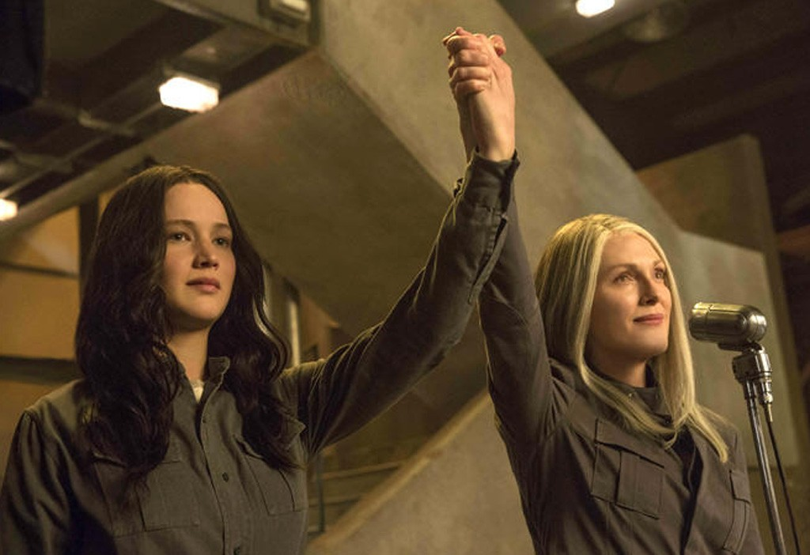
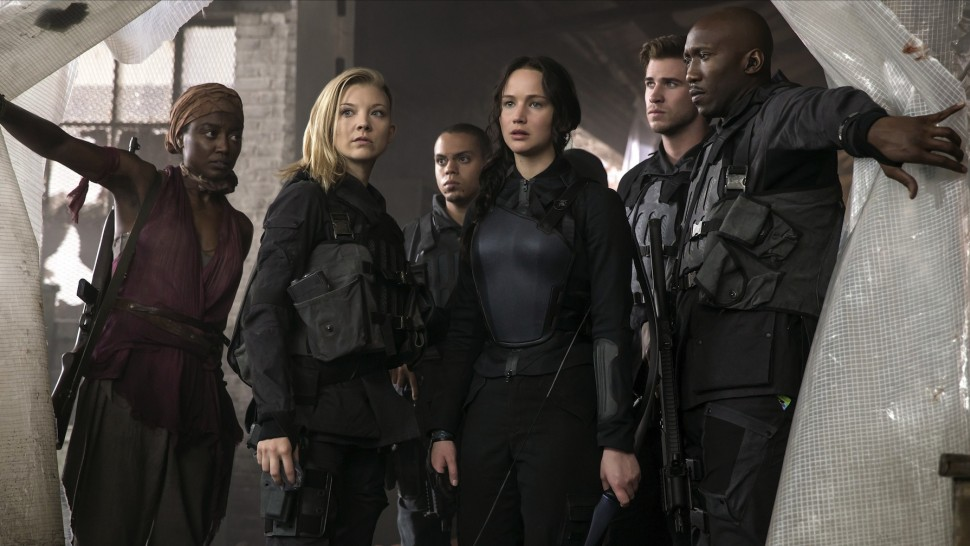

The Hunger Games: Mockingjay Part 1
The Hunger Games: Mockingjay — Part 1 is an American 2014 Sci-Fi/Dystopian feature film directed by Francis Lawrence and adaptation of the first half of Mockingjay by Suzanne Collins. It is the sequel to The Hunger Games: Catching Fire and third film in The Hunger Games film series.
The story continues to follow Katniss Everdeen; having twice survived the Hunger Games, Katniss finds herself in District 13. Under the leadership of President Coin and the advice of her trusted friends, Katniss reluctantly becomes the symbol of a mass rebellion, a mockingjay, against the Capitol and fights to save Peeta and a nation moved by her courage.
The film gained mixed reviews from critics (more positive than negative) and was Nominated for Best Original Song in the 72nd Golden Globe Awards.
Cast
Jennifer Lawrence as Katniss Everdeen
Josh Hutcherson as Peeta Mellark
Liam Hemsworth as Gale Hawthorne
Woody Harrelson as Haymitch Abernathy
Sam Claflin as Finnick Odair
Philip Seymour Hoffman as Plutarch Heavensbee
Plot
After being rescued from the destroyed arena in the 75th Hunger Games, Katniss Everdeen, along with fellow Victors Beetee and Finnick Odair, are taken to District 13, an underground rebel facility hidden beneath the ruins of the old District 13, where she is reunited with her mother and sister Prim. While recuperating, she is introduced to President Alma Coin, the rebel leader, and is told that her actions in the arena sparked riots and strikes against the Capitol. Coin asks her if she will become the "Mockingjay"—the symbol of the rebellion—as part of their "hearts and minds" strategy. Katniss flatly declines, angrily reminding her that they left Peeta Mellark, her portrayed lover and fellow District 12 tribute, behind in the arena. At the suggestion of Plutarch Heavensbee, the former Gamemaker, she is taken to see the ruins of District 12, which was completely leveled by a Capitol bombing campaign (with the exception of the houses in the Victor's Village). After seeing that Peeta is being used by Capitol state television to try and quell the rebellion, Katniss reluctantly changes her mind and agrees to become Coin's Mockingjay, on the condition that Peeta and the other victors will be rescued at the earliest opportunity and pardoned.
After Haymitch notes that Katniss thrives on spontaneity, she is introduced to her film team (led by Capitol escapee Cressida), is dressed up in a specially-designed outfit, and given Effie Trinket as a stylist and close friend Gale as a bodyguard. They go out to District 8 to visit a hospital, but as the visit concludes, a Capitol bombing squadron arrives and bombs the hospital, killing everyone inside. In her rage, Katniss gives a rousing speech to the camera, which is broadcast when Beetee hijacks the Capitol's news feed. The team then go back to District 12, where Gale tells the story of its destruction, and Katniss is filmed singing "The Hanging Tree". After both are broadcast, strikers in District 7 kill an entire team of Peacekeepers with hidden land mines, and a rebel demolition team from District 5 destroys the dam providing the Capitol with electricity, forcing them to use power generators and weakening their ability to broadcast their propaganda.
That night, Katniss is watching Peeta being interviewed by Caesar Flickerman, the Games' former presenter, when, in an apparent defiance of his captors, he suddenly shouts a warning to the camera that the Capitol is about to attack District 13. Coin orders a mass evacuation into the underground shelters. While Prim is nearly locked out when she goes back to get her cat, everyone manages to get inside safely, and the facility survives the attack unharmed. Upon emerging, Katniss discovers that the area is littered with white roses, and realizes that President Snow has sent them to taunt her, and presumes that he is about to kill Peeta. As Peeta's warning gave the District an additional eight minutes evacuation time, Coin dispatches an elite special forces team, which includes Gale, to rescue him, along with Johanna Mason, and Annie Cresta, the remaining Victors, from their prison in the Capitol's Tribute center. The rescue is successful. However, when Katniss goes to greet Peeta, he unexpectedly attacks and strangles her into unconsciousness, before being knocked unconscious himself by Boggs.
Katniss wakes up in the medical facility, and is informed that Peeta has been "hijacked"— a form of physical/mental torture in which he is brainwashed into wanting to kill Katniss through aversion therapy and tracker jacker venom—explaining why the Capitol allowed Gale's team to escape. A process to undo the therapy begins, with Peeta kept in isolation. Meanwhile, Coin announces the successful rescue of the Victors, and that the fight may now be taken to the Capitol.[2] During Coin's speech, Katniss looks for Peeta and looks in horror as she sees the hijacked Peeta in solitary confinement, restrained.